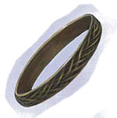
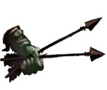
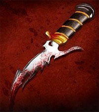
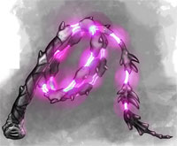

I chierici di Kalian possono consacrare determinati oggetti al fine di conferire loro un incantamento sacro minore.

| OGGETTO | Pergamena di Kalian |
| ORIGINE | DIVINA - Divinità Kalian - Forze Oscure |
| POTENZA | Least Minor Enchantment (75 xp, 150 gp) |
| SCUOLA DI MAGIA | ENCHANTMENT |
|
DESCRIZIONE
|
Può
essere incantata con questo incantamento minore ogni pergamena non magica.
Attraverso l'utilizzo di questo incantamento
la pergamena diventerà
capace di contenere unicamente incantesimi clericali della divinità del
sacerdote che ha incantato l'oggetto, divenendo il supporto
necessario per la creazione delle pergamene magiche clericali.
Oltre ai comuni modificatori applicabili a tutti gli incantamenti
minori, chi possiede la competenza Papermaking e la utilizza
nella produzione di questo minor enchantment riceve i seguenti
modificatori nella produzione di questo oggetto: |
| OGGETTO | Dust of Web |
| ORIGINE | DIVINA - Divinità Kalian - Forze Oscure |
| POTENZA | Least Minor Enchantment (75 xp, 250 gp) |
| SCUOLA DI MAGIA | ENCHANTMENT |
|
DESCRIZIONE
|
Questa polvere magica di colore grigio è in grado di far apparire una densa ragnatela di ragno nella posizione in cui è utilizzata. Per la sua particolare modalità di utilizzo, infatti, questa polvere può essere usata solo con la modalità di spargimento concentrato selezionando al momento dell'uso la posizione in cui far apparire la ragnatela. Una creatura che entra nella ragnatela o si trova nella sua posizione al momento dell'uso della polvere resterà invischiata qualora non superi un tiro salvezza su robustezza. Le creature di taglia large hanno un bonus di +5% al tiro salvezza. Se il tiro salvezza riesce la vittima potrà restare liberamente nell'esagono in questione od uscirne senza difficoltà ma qualora esca e rientri nel medesimo esagono dovrà superare un nuovo tiro salvezza. Se il tiro salvezza fallisce, la creatura non potrà spostarsi dalla zona occupata e si considererà incapacitata ai fini dell'applicazione delle altre penalità ottenute nel combattimento. Per liberarsi dalla ragnatela prima della fine della durata dell'incantesimo la vittima potrà unicamente provare a liberarsi con la forza. Tale azione che richiede un intero round e comporta l'accumulo di un punto fatica provocherà alla ragnatela danni pari al valore numerico per il quale la creatura è riuscita in una prova di forza (con un tiro pari o superiore alla propria forza, quindi, non provocherà alcun danno alla ragnatela). Le creature di taglia large riceveranno un bonus di +2 alla prova di forza. La ragnatela può subire fino a 20 punti danno prima di essere lacerata. I danni sono effettuati alla fine del round per cui la creatura sarà libera di agire solo nel round successivo alla distruzione della ragnatela. Terze creature possono, se munite di armi da taglio, aiutare a rompere la ragnatela. Costoro dovranno effettuare per ogni attacco una prova di destrezza (con –1 di penalità se usano armi medium e -3 se usano armi large). Se la prova è effettuata con successo l’attacco (senza necessità di alcun tiro per colpire) danneggerà solo la ragnatela provocandole normali danni, se invece la prova fallisce la ragnatela e la creatura bloccata si divideranno i danni provocati con l'attacco (la ragnatela subirà danni per eccesso). In ogni caso, al termine dell'effetto magico, che dura 5 round la ragnatela svanirà. Le creature di taglia huge o gargantuan non sono bloccate da questa ragnatela. |
| OGGETTO | Ring of Anti-Venom |
| ORIGINE | DIVINA - Divinità Kalian - Forze Oscure |
| POTENZA | Minor Enchantment (150 xp, 1000 gp) |
| SCUOLA DI MAGIA | ABJURATION |
| CARICHE | 3 |
|
DESCRIZIONE
 |
Questo anello magico, interamente realizzato in rame e di colore rigorosamente verde (dal costo di almeno 25 monete d'oro), può essere incantato dai chierici di Kalian. Chi indossa quest'anello è protetto dal veleno. In pratica, quando chi indossa questo anello deve superare un qualsiasi tiro salvezza su veleno, il tiro salvezza si considererà automaticamente effettuato con successo (senza che il beneficiario debba effettivamente effettuarlo) e l'anello magico consumerà una delle sue cariche. L'anello quindi non rende totalmente immuni dagli effetti dei veleni, si pensi a veleni particolarmente forti capaci di produrre effetti anche in caso di tiro salvezza riuscito. Questo oggetto magico non può essere ricaricato ed una volta terminate tutte le sue cariche si sgretolerà distruggendosi definitivamente. Se viene ritrovato casualmente si tiri 1d12 per determinare il numero delle cariche presenti: (1-3) 1 carica, valore 300 g.p.; (4-7) 2 cariche, valore 650 g.p.; (8-12) 3 cariche, valore pieno. |
| OGGETTO | Bolt of Shadow Kiss |
| ORIGINE | DIVINA - Divinità Kalian - Forze Oscure |
| POTENZA | Superior Minor Enchantment (7 xp, 50 gp) |
| SCUOLA DI MAGIA | ENCHANTMENT |
|
DESCRIZIONE
 |
Con questo incantamento magico minore possono essere incantate solo le frecce ed i dardi aventi la punta in ossidiana (link). Quando una freccia con questo incantamento viene scagliata da una qualsiasi creatura che utilizzi l'arma da tiro adeguata a spararla la stessa sarà automaticamente circondata da un alone di energia negativa in grado di provocare al bersaglio 2 danni supplementari da energia negativa. L'attivazione dell'incantamento è quindi automatica non richiedendo alcun genere di azione. Si noti però che se il proiettile è scagliato da un fedele della Fratellanza della Luce questo incantamento non si attiverà. |
| OGGETTO | Orb of Shadows | |||||||||||||||||||||||||||
| ORIGINE | DIVINA - Kalian - Forze Oscure | |||||||||||||||||||||||||||
| POTENZA | Superior Minor Enchantment (250 xp, 1500 gp) | |||||||||||||||||||||||||||
| SCUOLA DI MAGIA | NECROMANCY | |||||||||||||||||||||||||||
| CARICHE | 10 | |||||||||||||||||||||||||||
DESCRIZIONE |
Con questo incantamento minore può essere resa magica una piccola sfera di cristallo di roccia adeguatamente levigata dal valore minimo pari a 100 monete d'oro e dal peso pari a 0,5 libbre. Una volta incantata questa sfera può essere utilizzata esclusivamente dai sacerdoti di Kalian per convogliare l'energia del piano dimensionale dell'ombra durante il lancio di alcuni dei loro incantesimi. In pratica, questo oggetto potrà essere utilizzato come componente materiale supplementare (impugnandolo quindi nel corso del lancio dell'incantesimo) di alcune magie clericali della dea riferibili alla scuola di magia Necromancy comportando una penalità di +1 al casting time delle stesse. A seconda della magia sarà richiesto il consumo di un numero determinate di cariche magiche e l'oggetto conferirà i benefici previsti nella sottostante tabella. Per ricaricare la sfera è necessaria posizionarlo su un altare attivo di Kalian presso un qualsiasi tempio della divinità e cospargerlo dei necessari ingredienti magici (polvere miscelata di ossa, argento e legno carbonizzato). La sfera dovrà restare sull'altare per 30 giorni ininterrotti e sulla stessa andranno versate 15 monete d'oro di ingredienti magici per ogni carica che si vuole recuperare. Il procedimento di ricarica è sicuro ma se, per qualsiasi motivo, il teschio è rimosso dall'altare prima dello scadere dei 30 giorni il procedimento andrà interamente ripetuto e gli ingredienti dovranno essere riacquistati. A differenza dei comuni oggetti magici a cariche questa sfera può esaurire tutte le sue cariche senza perdere permanentemente il suo potere magico.
|
| OGGETTO | Weapon of Spider Bite |
| ORIGINE | DIVINA - Divinità Kalian - Forze Oscure |
| POTENZA | Superior Minor Enchantment (250 xp, 1750 gp) |
| SCUOLA DI MAGIA | CONJURATION |
|
DESCRIZIONE
|
Con
l'incantamento minore
of Spider Bite
possono essere incantate solo le armi da corpo a corpo da taglio o da
punta.
Un fedele del Kalian che impugna quest'arma può decidere,
una volta per ogni flusso di energia divina della dea, di invocare il potere della divinità per far
ricoprire la lama di pericoloso veleno. Per attivare il potere basta invocare
mentalmente la
propria divinità e non è richiesto l'utilizzo di un'intera azione bensì solo
di una frazione del round, si considera una
free action
che impone unicamente una penalità di +3 (+2 se si utilizza un'arma
rituale di Kalian) alla propria iniziativa e e
che richiede componenti verbali (preghiera
a Kalian) e somatici ma non il mantenimento della concentrazione.
L'arma sarà, quindi, coperta di veleno per un periodo di 4 round
(comprensivo di quello di attivazione) |
| OGGETTO | Dagger of Blood Draining |
| ORIGINE | DIVINA - Divinità Kalian - Forze Oscure |
| POTENZA | Greater Minor Enchantment (375 xp, 3.000 gp) |
| SCUOLA DI MAGIA | CONJURATION |
|
DESCRIZIONE
 |
Con l'incantamento minore of Blood Draining possono essere incantate solo le armi appartenenti alla categoria dei pugnali. Un fedele del Kalian che impugna quest'arma può decidere, una volta per ogni flusso di energia divina della dea, di invocare il potere della divinità per risucchiare il sangue dei propri nemici. In particolare, dopo che chi utilizza questo pugnale è andato a segno con un attacco in corpo a corpo su una vittima dotata di corpo organico di tipo animale basato sull'energia positiva (che sia regolarmente dotata di sangue animale), ma prima di tirare i danni provocati con l'attacco, costui potrà decidere di attivare l'arma (si consideri l'attivazione una non azione che richiede unicamente un atto di volontà) ed il pugnale si nutrirà del sangue della vittima. Chi impugna l'arma si curerà, quindi, della metà dei danni effettivamente inflitti alla vittima con la pugnalata (ai fini della cura non saranno considerati i dadi di danno supplementari provocati alla vittima con manovre speciali di combattimento quali, ad esempio, il Lethal Attack dei ladri né da arti di combattimento quali l'Arte del Ferire Gravemente e l'Arte del Combattimento Letale). Questo incantamento non può essere attivato contestualmente all'utilizzo di effetti magici similari (si pensi all'incantamento Vampiric od all'incantesimo Dagger of Blood Draining del terzo livello di potere speciale di Kalian). |
| OGGETTO | Whip of Weakness |
| ORIGINE | DIVINA - Divinità Kalian - Forze Oscure |
| POTENZA | Greater Minor Enchantment (375 xp, 3.000 gp) |
| SCUOLA DI MAGIA | CONJURATION |
|
DESCRIZIONE
 |
Con l'incantamento minore of Weakness possono essere incantate solo le fruste da guerra. Questo incantamento può essere attivato solo dai fedeli di Kalian ed unicamente quando la frusta da guerra risulti avviluppata al corpo di un bersaglio con il colpo di combattimento speciale “avviluppare”. In ogni caso, l'incantamento potrà essere attivato una sola volta ogni flusso di energia divina della dea. Attivare il potere dell'arma è una azione complessa che è effettuata ad un fattore iniziativa pari a +2, che richiede l’utilizzo di componenti somatici (mantenimento della frusta) e vocali (preghiera a Kalian) ma non il mantenimento della concentrazione. Si noti che l’incantamento si attiverà solo qualora la frusta risulti ancora avviluppata al momento dell’attivazione, in caso contrario l’attivazione fallirà ma l’incantamento non risulterà utilizzato. Quando l’incantamento è attivato con successo la frusta si irradierà con un'aura negativa di colore violaceo ed assorbirà la forza di chi è avvolto dalla frusta. Questa creatura dovrà superare un tiro salvezza su energia vitale, se il tiro salvezza fallisce sarà indebolito per tutto il round e subirà una penalità di -1 ai tiri per colpire, di -1 ai danni inferti in corpo a corpo (malus che si cumulano con quelli subiti dal colpo speciale di avviluppamento), inoltre riceverà una penalità di -10% a tutti i tiri salvezza su robustezza. All'inizio di ogni nuovo round la vittima avrà diritto a ripetere il suddetto tiro salvezza. L'effetto dell'incantamento durerà per 5 round (sempre che la vittima risulti costantemente avviluppata, altrimenti terminerà immediatamente). |
| OGGETTO | Ring of Shadow Veil |
| ORIGINE | DIVINA - Divinità Kalian - Forze Oscure |
| POTENZA | Greater Minor Enchantment (375 xp, 3.750 gp) |
| SCUOLA DI MAGIA | ABJURATION |
|
DESCRIZIONE
|
Questo anello magico, interamente realizzato in onice e dal costo di almeno 100 monete d'oro, è incantato dai chierici di Kalian. Questo anello può essere attivato da chi lo indossa una volta per ogni momento di flusso di energia divina di Kalian. Gli appartenenti alla razza degli Elfi Alti non possono attivare questo incantamento. Si tratta di una free action con componente vocale (invocazione a Kalian) che non richiede il mantenimento della concentrazione e che impone un modificatore alle iniziative per le eventuali azioni successive del round pari a +2. A partire da quando l'incantamento è attivato e per tutto il resto del round il corpo di chi indossa l'anello viene circondato da un velo di oscurità che ne nasconde parzialmente la vista. Per tale motivo, chiunque provi a colpire il beneficiario riceverà una penalità di -2 al tiro per colpire e del 20% di fallire nel lancio di incantesimi aventi costui come bersaglio diretto (-3 e 30% se chi indossa l'anello appartiene alla razza degli Elfi Scuri). Trattandosi di un alone di buio, creature accecate o che hanno una vista in grado di penetrarlo (si pensi alla vista abissale o all'oscurovisione) non saranno influenzate dalla presenza velo d'ombra (o lo saranno in maniera ridotta); parimenti non saranno influenzate che percepiscono la presenza del nemico con sensi diversi dalla vista (si pensi al senso del tremore od al senso primordiale). Il velo tenebroso non limita in alcun modo la vista di chi indossa l'anello magico. |